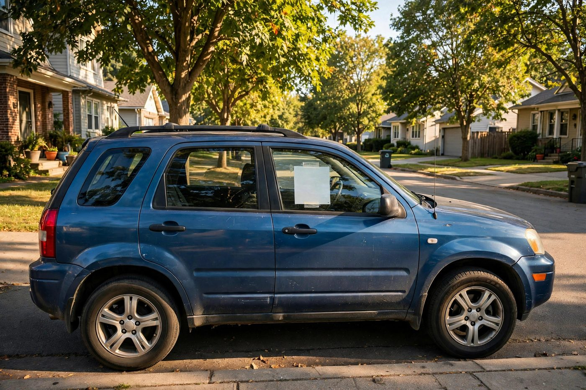

Depreciation explained: how cars lose value over time

Ask a car owner where their money goes and you'll hear about fuel, insurance, and the repair that stung last winter. Almost nobody mentions depreciation — the slow leak that is usually the single largest cost of ownership. A car that loses a third of its value in a few years costs its owner a third of its price, silently, with no receipt. This guide explains depreciation in plain language: what it is, what drives it, and how to think about it before you buy.
What depreciation actually is
Depreciation is the difference between what you paid for a car and what it is worth later. It's not a fee anyone sends you; it's value evaporating. If you buy a car for $20,000 and sell it four years later for $12,000, depreciation cost you $8,000 — whether or not you ever noticed. It becomes real the moment you sell, trade in, or total the car, but it accrues the whole time.
Why the early years hurt most
Cars lose value fastest at the start. The steepest drop happens in the first year or two, then the curve flattens: a car that shed value quickly when new sheds it more slowly once it's older. Think of it as a curve that starts steep and gradually levels off. The practical meaning: the shorter you keep a car, the more depreciation you pay per year of ownership. Someone who trades in every two or three years pays the steepest part of the curve over and over. Someone who keeps a car for eight or ten years spreads the total loss over many years — which is why "drive it until it dies" is such a popular financial strategy.
What drives how fast a car depreciates
- Brand and model reputation. Cars known for reliability and durability hold value better, because used buyers trust them. A model with a shaky reputation discounts accordingly.
- Supply of used examples. A model that sold in huge numbers — especially to fleets — floods the used market and pushes prices down. Rare-in-demand models hold up better.
- Fuel economy. When fuel prices rise, efficient cars hold value better and gas-guzzlers fall faster. The market votes with its wallet.
- Condition, mileage, and history. Two identical cars can be worth very different amounts. Clean records, sensible mileage, no accidents, and documented maintenance all protect resale value.
- Technology and redesign cycles. A model that just got a full redesign makes the previous generation look older overnight. New safety tech and infotainment standards do the same to aging models.
What depreciation is not
Depreciation isn't a punishment for buying the wrong car, and it isn't something you can haggle with. It's a market phenomenon — the collective judgment of future used-car buyers about what your car is worth. You can't stop it. You can only choose how much of it you're exposed to, through which car you pick and how long you keep it.
How to use this when buying
Before buying, check what the model you're considering is worth as a used car a few years old. That tells you the depreciation the first owners absorbed — and roughly the curve your own car will follow. If a $30,000 car is worth $18,000 at year five, the owners in between paid $12,000 for five years of driving, depreciation-wise. Ask yourself whether that's a cost you're comfortable with, and whether a different model with a gentler curve would serve you better. On used purchases, the flip side applies: buying a three-year-old car means the first owner paid for the steepest years, and you're buying in on the flatter part of the curve.
The practical takeaway
Depreciation is invisible, unavoidable, and usually your biggest car expense. Treat it like any other cost: estimate it before you buy by checking older-model resale values, and decide your holding period with your eyes open. The cheapest car to own is rarely the one with the lowest sticker — it's the one whose value falls most slowly while you use it.